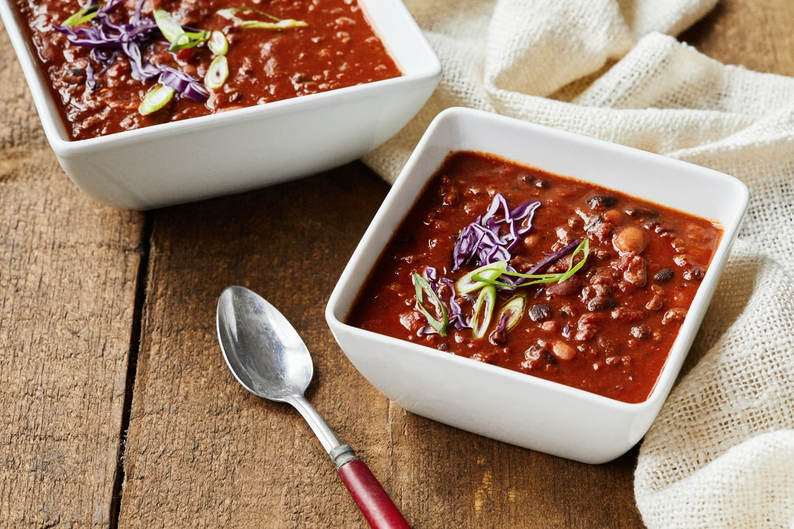

Sweet Potato Chili

Description
Test your skill and go on an adventure with this chili made of a medley of ingredients your stomach
will love.
Based in a pan with the simplest of bases your journey begins with the usual suspects of onion and
garlic but then is joined by chili powder, cumin, paprika, oregano and red pepper. The rest of the
ingredients get added over a boil and two simmers which lets the flavour set in.
Ingredients
- 7 tablespoons vegetable broth
- 3 garlic cloves minced
- 2 cups kidney beans
- 2 sweet potatoes diced
- 2 tablespoons chili powder
- 1 tablespoon ground cumin
- 1 teaspoon tomato paste
- 1 can diced tomatoes
- 1/2 cup chopped onion
- 1/2 jalapeno pepper minced
- 1/2teaspoon smoked paprika
- 1/2teaspoon dried oregano
- 1/2 teaspoon red pepper flakes
Directions
- Heat the vegetable broth in a pan over medium heat.
- Add in and stir onion, garlic and jalapeno pepper in the broth for 5 minutes.
- Add sweet potatoes, chili powder, cumin, paprika, oregano and red pepper.
- Bringing the pan to a boil then reduce heat to medium simmering for 20 minutes.
- Add diced tomatoes and paste and kidney beans then reduce heat to low simmering for 45 minutes.